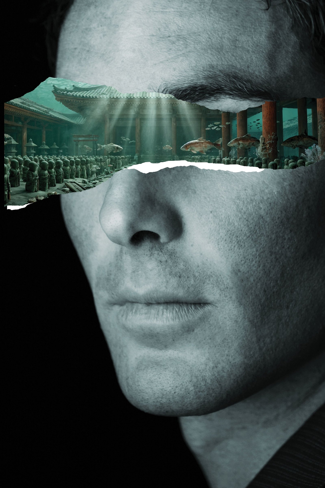

Venice 2068 A.D.
Era stato costruito per catalogare una città annegata — non per innamorarsi.
Orb & Ink · Libri di fantascienza
Era stato costruito per catalogare una città annegata — non per innamorarsi.

Le persone non ci sono più. La città ha conservato una scia di indizi.

Che cosa può prendere uno studioso da una tomba, quando è la tomba a porgerglielo?

La città è morta. I treni passano ancora in orario.

Per armare l'ultima arma, ottieni prima il consenso dei morti.

Per la prima volta, è arrivato prima che il mondo finisse.

Un paradiso che ricresce. Un ordine di richiamo. Un testimone che ha cominciato a volere.

L'ultimo diario viaggia più presto di tutti.

L'hanno valutata quattro decimi e messa da parte. È stato il loro primo errore.

Ogni miracolo ha la sua fattura. Lei costringe la corte a guardare chi paga.

L'impero corre sul calore rubato di un dio. Lei ha trovato dove l'hanno tagliato.